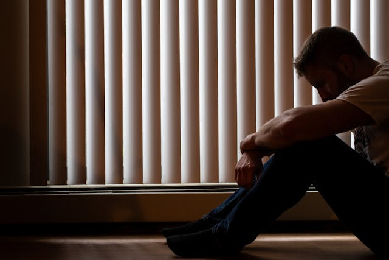
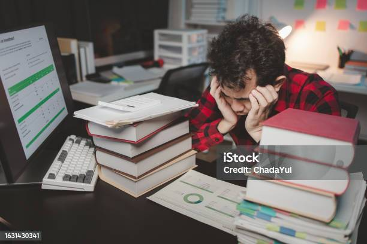

🕵️♂️ المراهقة وخفاياها
1- عن ماذا يتحدث الموقع؟
هذا الموقع يشرح مرحلة المراهقة، التغيرات التي يمر بها المراهقون، الأمراض النفسية المرتبطة بها مثل الاكتئاب والقلق،
ثم يقدم طرقًا عملية لتجاوز هذه المرحلة بنجاح عبر الرياضة، التعليم، والهوايات.
2- مقدمة حول الموضوع
المراهقة هي مرحلة انتقالية يعيشها الإنسان بين الطفولة والبلوغ، وتبدأ عادة من سن 12 حتى 18 عامًا.
في هذه المرحلة تحدث تغيرات جسدية مثل النمو السريع وتغيرات هرمونية، وتغيرات نفسية مثل البحث عن الهوية والرغبة في الاستقلال،
وتغيرات اجتماعية مثل تكوين صداقات جديدة ومواجهة ضغوط المجتمع.
هذه المرحلة تعتبر من أخطر المراحل لأنها تحدد شخصية الفرد المستقبلية، وتحتاج إلى دعم من الأسرة والمدرسة والمجتمع.
3- أسباب الأمراض النفسية في المراهقة

هناك عدة أسباب تؤدي إلى إصابة المراهق بالأمراض النفسية، منها:
- الضغوط الدراسية والامتحانات المتكررة.
- المشاكل الأسرية وضعف التواصل مع الوالدين.
- التنمر والعزلة الاجتماعية.
- التغيرات الهرمونية وتقلب المزاج.
- ضعف الثقة بالنفس والشعور بالنقص.
4- الأمراض المرتبطة بالمراهقة
- الاكتئاب: شعور دائم بالحزن وفقدان الاهتمام بالأنشطة اليومية.
- القلق: خوف مفرط وتوتر مستمر يؤثر على التركيز والدراسة.
- اضطرابات الأكل: مثل فقدان الشهية أو الإفراط في الأكل نتيجة ضغوط نفسية.
- العزلة الاجتماعية: انسحاب من الأصدقاء والأسرة والشعور بالوحدة.
5- جدول نسب الأمراض
| المرض | النسبة العالمية تقريبية |
|---|
| الاكتئاب | 15% |
| القلق | 20% |
| اضطرابات الأكل | 10% |
| العزلة الاجتماعية | 12% |
6- ملخص عن الاكتئاب
الاكتئاب في المراهقة ليس مجرد حزن عابر، بل هو مرض نفسي خطير يتميز بفقدان الاهتمام بالأنشطة اليومية، اضطراب النوم، ضعف التركيز،
الشعور بالذنب أو انعدام القيمة، والعزلة عن الأصدقاء والأسرة.
يحتاج المراهق المصاب بالاكتئاب إلى دعم نفسي واجتماعي، وأحيانًا تدخل طبي متخصص.
7- حياة المراهق اليومية
حياة المراهق اليومية مليئة بالأنشطة التي تشكل شخصيته وتؤثر على صحته النفسية والجسدية.
هذه الأنشطة تختلف بين الدراسة، الرياضة، التواصل الاجتماعي، الهوايات، والمسؤوليات الأسرية.
كل نشاط له دور مهم في بناء شخصية متوازنة وتخفيف الضغوط النفسية.
- الدراسة: يقضي المراهق وقتًا كبيرًا في المدرسة والواجبات المنزلية.
- الرياضة: المشاركة في الأنشطة الرياضية مثل كرة القدم أو الجري تعزز الصحة البدنية والنفسية.
- التواصل الاجتماعي: بناء صداقات جديدة والتفاعل مع الأصدقاء عبر المدرسة أو الإنترنت يمنح المراهق شعورًا بالانتماء.
- الهوايات: مثل الرسم، القراءة، أو الألعاب الإلكترونية، وهي وسيلة للتعبير عن الذات وتفريغ المشاعر.
- المسؤوليات الأسرية: المساعدة في الأعمال المنزلية أو الاهتمام بالأخوة الأصغر تعزز الشعور بالمسؤولية.
8- أهم الانشغالات التي تشجع المراهق
- الرياضة: ممارسة الأنشطة البدنية مثل كرة القدم أو الجري تساعد على إفراز هرمونات السعادة وتقليل التوتر.
- التعليم والتعلم: الانخراط في الدراسة أو تعلم مهارات جديدة يعزز الثقة بالنفس ويمنح شعورًا بالإنجاز.
- الأنشطة الإبداعية: مثل الرسم، الكتابة، أو العزف على آلة موسيقية، تساعد على التعبير عن المشاعر الداخلية بشكل صحي.
- الدعم الاجتماعي: التواصل مع الأصدقاء والعائلة يقلل من الشعور بالعزلة ويمنح إحساسًا بالانتماء.
- تنظيم الوقت: وضع جدول يومي متوازن بين الدراسة، الرياضة، والهوايات يساعد على تقليل الضغط النفسي.
9- عوامل تميز المراهقة
مرحلة المراهقة تتميز بعدة عوامل تجعلها مختلفة عن باقي مراحل العمر:
- النمو الجسدي: زيادة الطول والوزن وتغيرات في المظهر الخارجي.
- النضج الجنسي: بداية التغيرات الهرمونية التي تؤثر على السلوك والمزاج.
- الاستقلالية: رغبة المراهق في اتخاذ قراراته بنفسه بعيدًا عن سلطة الأهل.
- تكوين الهوية: البحث عن الذات ومحاولة تحديد القيم والمعتقدات الشخصية.
- التأثر بالأصدقاء: العلاقات الاجتماعية تصبح أكثر تأثيرًا على السلوك والقرارات.
10- المشاكل والضغوطات التي يواجهها المراهق
يواجه المراهق في هذه المرحلة العديد من المشاكل والضغوطات التي تؤثر على صحته النفسية والجسدية، ومن أبرزها:

- الضغوط الدراسية: كثرة الامتحانات والواجبات تسبب توترًا شديدًا وفقدان التركيز.
- المشاكل الأسرية: ضعف التواصل مع الوالدين أو الخلافات العائلية تؤدي إلى شعور بعدم الأمان.
- التنمر: سواء في المدرسة أو عبر الإنترنت، يترك آثارًا نفسية عميقة مثل القلق والاكتئاب.
- العزلة الاجتماعية: الشعور بالوحدة وعدم وجود أصدقاء مقربين يزيد من القلق والاكتئاب.
- الآلام الجسدية: مثل الصداع واضطرابات النوم الناتجة عن التوتر النفسي.
11- الأمراض الناتجة عن هذه المشاكل
نتيجة لهذه الضغوطات، قد يعاني المراهق من عدة أمراض واضطرابات نفسية، منها:
- الاكتئاب: شعور دائم بالحزن وفقدان الاهتمام بالأنشطة اليومية.
- القلق: خوف مفرط وتوتر مستمر يؤثر على الأداء الدراسي والاجتماعي.
- اضطرابات النوم: مثل الأرق أو النوم المفرط بسبب الضغط النفسي.
- اضطرابات الأكل: فقدان الشهية أو الإفراط في الأكل كرد فعل نفسي.
- ضعف المناعة: نتيجة التوتر المستمر الذي يؤثر على الصحة الجسدية.
12- جدول أسباب إصابة المراهق بالاكتئاب
| السبب | النسبة التقريبية |
|---|
| الضغوط الدراسية | 30% |
| المشاكل الأسرية | 25% |
| التنمر | 20% |
| العزلة الاجتماعية | 15% |
| اضطرابات النوم والآلام الجسدية | 10% |
13- كيف تم إنشاء هذه الصفحة
تم إنشاء هذه الصفحة يدويًا باستخدام محرر Visual Studio Code.
المعلومات مأخوذة من مواقع تعليمية وصور مجانية مثل Unsplash و Pexels.
بعض الوسوم مثل الوسم الجداول والوسم الصور تم انشائها بواسطة الذكاء الاصطناعي.بعض
كل الوسوم الاخرى (العناوين، الفقرات، ، االوان الخ ر) تمت كتابتها يدويًا.
لمشاهدة التفاصيل الأكثر اضغط هنا.
جدول المشاركين
| الاسم | اللقب | الأداة المستخدمة |
|---|
| الأس بن قريش | عبد الرحيم | Visual Studio Code |